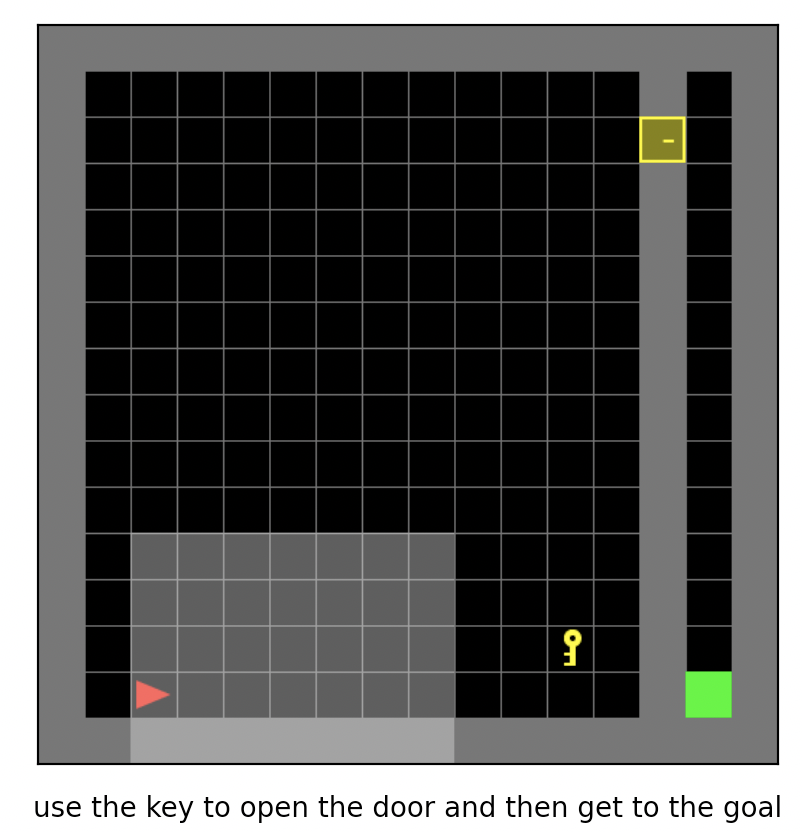

MiniGrid¶
概述¶
MiniGrid, 即最小化的格子世界环境，是经典的稀疏奖励的离散动作空间强化学习环境，常作为离散动作空间条件下稀疏强化学习算法的基准测试环境。 在该游戏中，智能体需要学习在一个离散动作集合中选择合适的动作，在方格世界中完成移动，获取钥匙，开门等一系列序列决策以到达目标的位置。 它有许多不同的实现版本，这里主要介绍 MiniGrid, 因为其实现简单、轻量、代码依赖少、容易安装。 它包括MiniGrid-Empty-8x8-v0, MiniGrid-FourRooms-v0, MiniGrid-DoorKey-16x16-v0, MiniGrid-KeyCorridorS3R3-v0, MiniGrid-ObstructedMaze-2Dlh-v0, MiniGrid-ObstructedMaze-Full-v0等一系列环境, 下图所示为其中的MiniGrid-DoorKey-16x16-v0游戏。
{kind=link}
安装¶
安装方法¶
用户可以选择通过pip一键安装或git clone代码库后pip本地安装.
注：如果用户没有root权限，请在install的命令后面加上–user
# Method1: Install Directly
pip install gym-minigrid
# Method2: First clone this repository and install the dependencies with pip
git clone https://github.com/maximecb/gym-minigrid.git
cd gym-minigrid
pip install -e .
验证安装¶
安装完成后，可以在Python命令行中运行如下命令, 如果显示出游戏的交互界面，则证明安装成功：
cd gym-minigrid
./manual_control.py --env MiniGrid-Empty-8x8-v0
变换前的空间（原始环境）¶
观察空间¶
以MiniGrid-Empty-8x8-v0为例，
env = gym.make('MiniGrid-Empty-8x8-v0')
obs1 = env.reset() # obs: {'image': numpy.ndarray (7, 7, 3),'direction': ,'mission': ,}
env = RGBImgPartialObsWrapper(env) # Get pixel observations
obs2 = env.reset() # obs: {'mission': ,'image': numpy.ndarray (56, 56, 3)}
env = ImgObsWrapper(env) # Get rid of the 'mission' field
obs3 = env.reset() # obs: numpy.ndarray (56, 56, 3)
# 不能在使用上述Wrapper后再使用此FlatObsWrapper，应该单独使用
env = gym.make('MiniGrid-Empty-8x8-v0')
env = FlatObsWrapper(env)
obs4 = env.reset() # obs: numpy.ndarray (56, 56, 3)
obs1为一个
dict，包含image,direction,mission,这3个字段, 其中image字段是一个shape为(7, 7, 3)的numpy.ndarray，数据类型为uint8(7，7)表示只观测到附近7x7方格内的世界(因为环境是部分可观测的)，3表示每个小格对应一个3维的描述向量，注意这里不是真正的图像；direction字段是给出一个指导性的方向；mission字段是一个文本字符串，描述了智能体应该达到什么样的目标以获得奖励.用户如果想使用真正的像素形式的图像，需要通过
RGBImgPartialObsWrapper对env进行封装，obs2为一个dict，包含mission,image这2个字段，其中image字段是一个shape为(56, 56, 3)的numpy.ndarray，数据类型为uint8是环境是部分可观测的真正的图像；再通过
ImgObsWrapper后，obs3是一个numpy.ndarray，shape为(56, 56, 3)，数据类型为uint8我们的代码库使用第4种
FlatObsWrapper方式，这种方式将mission字段中的任务字符串用one-hot的方式编码， 并将其与image字段内容拼接成一个numpy.ndarrayobs4，其shape为(2739，)，数据类型为float32
动作空间¶
游戏操作按键空间，一般是大小为7的离散动作空间，数据类型为
int，需要传入python数值（或是0维np数组，例如动作3为np.array(3)）动作在0-6中取值，具体的含义是：
0：left
1：right
2：up
3：toggle
4：pickup
5： drop
6： done/noop
参考 MiniGrid manual_control.py ，键盘按键-动作对应关系为:
‘arrow left’: left
‘arrow right’: right
‘arrow up’: up
‘ ’: toggle
‘pageup’: pickup
‘pagedown’: drop
‘enter’: done/noop
奖励空间¶
游戏得分，不同的minigrid子环境奖励幅度差异较小，其最大值为1，一般是一个
float数值，由于是稀疏奖励环境，只有在agent(显示为红色的点)到达goal (显示为绿色的点)时才有一个大于零的奖励，具体的数值由不同环境和达到goal所用的总步数决定，没有达到goal之前的奖励都是0。
其他¶
当智能体到达绿色的goal或者达到环境的最大步数限制时，游戏结束。
关键事实¶
观测输入可以选择像素形式的图像或者含有具体语义的”图像”, 还可以选用描述智能体应该达到何种目标以获得奖励的文本形式的字符串。
离散动作空间。
稀疏奖励，奖励取值尺度变化较小，最大为1，最小为0。
变换后的空间（RL环境）¶
观察空间¶
变换内容：我们的代码库使用第4种
FlatObsWrapper方式，这种方式将mission字段中的任务字符串以one-hot的方式编码，并将其与image字段内容拼接成一个长数组变换结果：一维np数组，尺寸为
(2739，)，数据类型为np.float32，取值为[0., 7.]
动作空间¶
基本无变换，依然是大小为N=7的离散动作空间，一般为一维np数组，尺寸为
(1, )，数据类型为np.int64
奖励空间¶
变换内容：基本无变换
上述空间使用gym环境空间定义则可表示为：
import gym
obs_space = gym.spaces.Box(low=0, high=5, shape=(2739,), dtype=np.float32)
act_space = gym.spaces.Discrete(7)
rew_space = gym.spaces.Box(low=0, high=1, shape=(1, ), dtype=np.float32)
其他¶
环境
step方法返回的info必须包含final_eval_reward键值对，表示整个episode的评测指标，在minigrid中为整个episode的奖励累加和
其他¶
随机种子¶
环境中有两部分随机种子需要设置，一是原始环境的随机种子，二是各种环境变换使用到的随机库的随机种子（例如
random，np.random）对于环境调用者，只需通过环境的
seed方法进行设置这两个种子，无需关心具体实现细节环境内部的具体实现：对于随机库种子，则在环境的
seed方法中直接设置该值; 对于原始环境的种子，在调用环境的reset方法内部，具体的原始环境reset之前设置为seed + np_seed, 其中seed为前述的随机库种子的值, np_seed = 100 * np.random.randint(1, 1000)。
训练和测试环境的区别¶
训练环境使用动态随机种子，即每个episode的随机种子都不同，由一个随机数发生器产生，而这个随机数发生器的种子是通过环境的
seed方法固定的；测试环境使用静态随机种子，即每个episode的随机种子相同，通过seed方法指定。
存储录像¶
在环境创建之后，重置之前，调用enable_save_replay方法，指定游戏录像保存的路径。环境会在每个episode结束之后自动保存本局的录像文件。（默认调用gym.wrapper.Monitor实现，依赖ffmpeg），下面所示的代码将运行一个环境episode，并将这个episode的结果保存在形如./video/xxx.mp4这样的文件中：
from easydict import EasyDict
import numpy as np
from dizoo.minigrid.envs import MiniGridEnv
env = MiniGridEnv(EasyDict({'env_id': 'MiniGrid-Empty-8x8-v0', 'flat_obs': True}))
env.enable_save_replay(replay_path='./video')
obs = env.reset()
while True:
act_val = env.info().act_space.value
min_val, max_val = act_val['min'], act_val['max']
random_action = np.random.randint(min_val, max_val, size=(1,))
timestep = env.step(random_action)
if timestep.done:
print('Episode is over, final eval reward is: {}'.format(timestep.info['final_eval_reward']))
break
DI-zoo可运行代码示例¶
完整的训练配置文件在 github
link
内，对于具体的配置文件，例如minigrid_r2d2_config.py，使用如下的demo即可运行：
from easydict import EasyDict
from ding.entry import serial_pipeline
collector_env_num = 8
evaluator_env_num = 5
minigrid_r2d2_config = dict(
exp_name='minigrid_empty8_r2d2_n5_bs2_ul40',
env=dict(
collector_env_num=collector_env_num,
evaluator_env_num=evaluator_env_num,
env_id='MiniGrid-Empty-8x8-v0',
# env_id='MiniGrid-FourRooms-v0',
# env_id='MiniGrid-DoorKey-16x16-v0',
n_evaluator_episode=5,
stop_value=0.96,
),
policy=dict(
cuda=True,
on_policy=False,
priority=True,
priority_IS_weight=True,
model=dict(
obs_shape=2739,
action_shape=7,
encoder_hidden_size_list=[128, 128, 512],
),
discount_factor=0.997,
burnin_step=2, # TODO(pu) 20
nstep=5,
# (int) the whole sequence length to unroll the RNN network minus
# the timesteps of burnin part,
# i.e., <the whole sequence length> = <burnin_step> + <unroll_len>
unroll_len=40, # TODO(pu) 80
learn=dict(
# according to the R2D2 paper, actor parameter update interval is 400
# environment timesteps, and in per collect phase, we collect 32 sequence
# samples, the length of each samlpe sequence is <burnin_step> + <unroll_len>,
# which is 100 in our seeting, 32*100/400=8, so we set update_per_collect=8
# in most environments
update_per_collect=8,
batch_size=64,
learning_rate=0.0005,
target_update_theta=0.001,
),
collect=dict(
# NOTE it is important that don't include key n_sample here, to make sure self._traj_len=INF
each_iter_n_sample=32,
env_num=collector_env_num,
),
eval=dict(env_num=evaluator_env_num, ),
other=dict(
eps=dict(
type='exp',
start=0.95,
end=0.05,
decay=1e5,
),
replay_buffer=dict(
replay_buffer_size=100000,
# (Float type) How much prioritization is used: 0 means no prioritization while 1 means full prioritization
alpha=0.6,
# (Float type) How much correction is used: 0 means no correction while 1 means full correction
beta=0.4,
)
),
),
)
minigrid_r2d2_config = EasyDict(minigrid_r2d2_config)
main_config = minigrid_r2d2_config
minigrid_r2d2_create_config = dict(
env=dict(
type='minigrid',
import_names=['dizoo.minigrid.envs.minigrid_env'],
),
env_manager=dict(type='base'),
policy=dict(type='r2d2'),
)
minigrid_r2d2_create_config = EasyDict(minigrid_r2d2_create_config)
create_config = minigrid_r2d2_create_config
if __name__ == "__main__":
serial_pipeline([main_config, create_config], seed=0)
{kind=link}
{kind=link}
{kind=link}